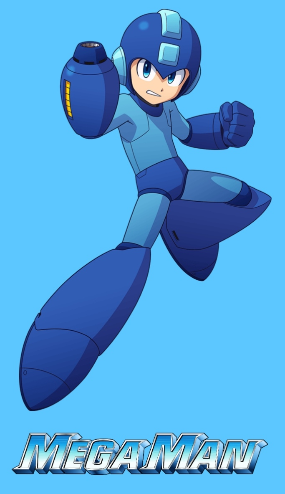

Mega Man es un videojuego de acción-plataformas de 1987 desarrollado y publicado por Capcom para la Nintendo Entertainment System. Fue dirigida por Akira Kitamura, con Nobuyuki Matsushima como programador principal, y es el primer juego de la franquicia Mega Man y la serie original de videojuegos. Mega Man fue producido por un pequeño equipo específicamente para el mercado de consolas domésticas, por primera vez para Capcom, que anteriormente se centraba en los títulos arcade.

El juego da inicio a la lucha del robot humanoide y el personaje jugador Mega Man contra el científico loco Dr. Wily y los seis Robot Masters bajo su control. El juego no lineal de Mega Man le permite al jugador elegir el orden en el que completará sus seis etapas iniciales. Cada uno culmina en una batalla contra jefes "Robot Master" que otorga al personaje jugador un arma única. Parte de la estrategia del juego consiste en elegir el orden para abordar las etapas con el fin de ganar las armas que serán más útiles en futuros niveles.

Los críticos elogiaron a Mega Man por su diseño general, aunque el juego no fue un éxito comercial. Mega Man estableció muchas de las convenciones de juego, historia y gráficos que definen las secuelas, subseries y spin-offs posteriores. Desde entonces, el juego se ha incluido en compilaciones de juegos, relanzado en teléfonos móviles y se ha convertido en parte de los servicios de emulación de consola. Recibió un remake completo en 3D titulado Mega Man Powered Up en 2006.
En el año 20XX, los robots desarrollados para ayudar a la humanidad son comunes gracias a los esfuerzos del reconocido diseñador de robots Dr. Light. Sin embargo, un día estos robots se descontrolan y comienzan a atacar a la población, entre ellos seis robots humanoides avanzados creados por el Dr. Light con fines industriales:
Se da cuenta de que el culpable es su antiguo rival, el Dr. Wily (que planea conquistar el mundo), pero no está seguro de qué hacer. Su robot ayudante Rock, que tiene un fuerte sentido de la justicia, se ofrece a convertirse en un robot de lucha para detener el plan del Dr. Wily y convertirse en Mega Man. Con el tiempo, derrota a los seis robots y recupera sus núcleos centrales, luego se enfrenta al Dr. Wily dentro de su fábrica de robots con sede en el Pacífico (que resulta ser robots de Light que producen en masa). Después de un enfrentamiento final, Wily es derrotado y Mega Man regresa con su familia.
Mega Man consta de seis niveles de plataformas de desplazamiento lateral elegidos libremente por el jugador. En cada nivel, el personaje jugador, Mega Man, lucha contra varios enemigos y obstáculos antes de enfrentarse a un jefe "Robot Master" al final del nivel. Al derrotar al jefe, el jugador asimila el ataque característico del Robot Master, o "Arma Especial", en el arsenal de Mega Man por el resto del juego.
A diferencia del Mega Buster estándar (Rock Buster en Japón), los poderes de Robot Master tienen municiones limitadas que se reponen recogiendo celdas de municiones lanzadas por enemigos derrotados al azar. Los enemigos también sueltan células de energía que reponen el indicador de salud de Mega Man. Si bien el jugador es libre de continuar el juego en cualquier orden, cada Robot Master es especialmente vulnerable a un arma específica, lo que alienta al jugador a completar ciertas etapas antes que otras. El jugador también puede volver a visitar los niveles borrados. Además de las armas tomadas de los Robot Masters, el jugador puede recoger un elemento generador de plataforma conocido como "Magnet Beam" en el escenario de Elec Man.

Cuando se completan las seis etapas de Robot Master, la séptima y última etapa aparece en el medio del menú de selección de etapa. Esta etapa, en la que el jugador atraviesa la fábrica de robots del Dr. Wily, es una cadena de cuatro etapas regulares unidas, cada una con al menos un nuevo jefe. Durante estas etapas finales, los seis Robot Masters también deben ser combatidos nuevamente en un orden predeterminado antes de la confrontación final contra el Dr. Wily.